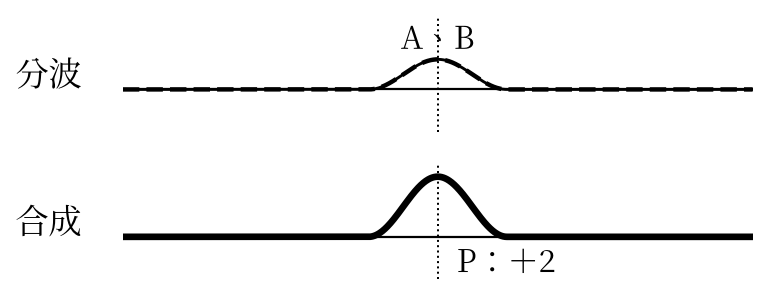
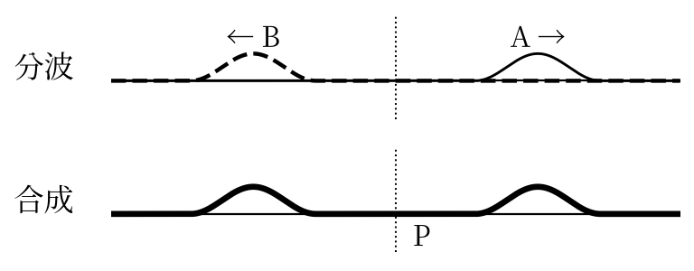
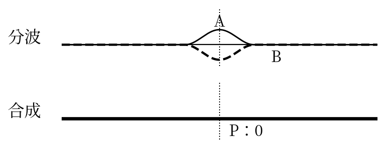
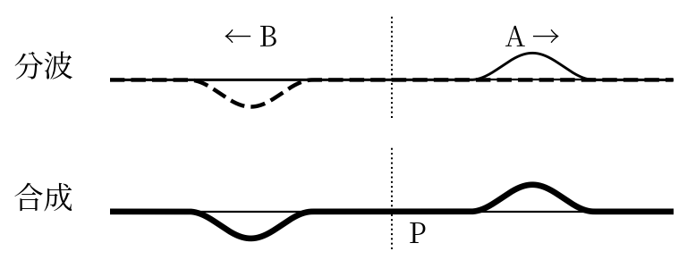
雷射穿過兩條細縫，屏幕上出現的不是兩條亮線，而是一整排明暗相間的條紋。這本教材帶你從繩波一路走到光，找出能解釋它的規則。
封面圖：依波的疊加計算生成的雙狹縫亮度示意（模型）。翻頁：按「下一頁」、鍵盤 ← →，或在手機上左右滑動。
點選任一頁名即可跳到該頁。也可以隨時按上方「目錄」打開完整頁碼清單。
直進模型能解釋狹縫後的亮暗分布嗎？波的疊加如何解釋？02
每一步都用上一步建立的規則：先在看得見起伏的繩波、水波上建立「疊加」，再把同一條規則帶到看不見振動、只看得見亮暗的光。0102
按下方「下一頁／上一頁」、鍵盤 ← →，或在手機上左右滑動。下方選單可直接跳頁。
打字或勾選後會自動暫存在這台裝置，換頁、重新整理都不會消失。最後在「總學習單」一次檢查，並下載 JSON 或 CSV 交給老師。
點任何實拍照片可放大，再點一下或按 Esc 關閉。模擬可拖曳滑桿、按播放／暫停，所有計算都在你的裝置上進行，不需網路。
右上角切換。教師模式會顯示每頁的「教師提示」與教師專區（教案、題卡、細目表、素材、困難引導、文件對照）。
骨架是文件02的三節課（設計理念：先預測，再觀察，以證據修正解釋；由水波類比遷移至光）。每節依教案時間軸展開，嵌入 01 的知識節點正文、03 的學習單、05 的題卡、07A／07B 的素材與腳本、08 的數位活動、10 的提示階梯；06 用於課前、各節小測與總評量；04 放在延伸。頁面上的小方框（如 01）標示出處。完整對照見「教師專區 › 文件對照」。
課綱：學習表現 tr-Ⅴc-1、tm-Ⅴc-1、pc-Ⅴc-2；學習內容 PKa-Ⅴc-3、PKa-Ⅴc-5、PKa-Ⅴc-6。實施條件：一般教室、兩人一機、個別作答；AI 與實體示範選用。本教材以「提示階梯」離線替代 AI 追問（AI 僅追問、不代答）。
正式上課前，老師會另外發一份前測（約 25～30 分鐘、14 題，不計分）。這裡先用三題檢查你需要的舊知識，答錯也沒關係。06 前測
1. 繩上某一點上下振動。下列何者是「振幅」？
2. 「波長」指的是：
3. 如果光只會沿直線前進，一束平行光通過一條窄縫後，屏幕上應該看到什麼？
前測（14 題／30 分）針對疊加、初始光模型與證據來源，用來辨識先備概念與迷思（碰撞、相消等）。「運用疊加並說明通過後狀態」與「判讀屏幕資料並比較預測」各占 23.3%，分別是第1、2節的起點。可將前測結果對照文件10 的五項困難，預先決定各節的時間分配。細目表見教師專區。020610
你已經知道波會傳播，也知道位移、振幅、波長、週期的意思。01 先備
這節要做用繩波建立「疊加」規則，再用它解釋兩個水波源形成的穩定圖樣。這條規則是後面兩節解釋光的唯一工具。02
核心問題波如何疊加？
一條長繩上，A 從左邊、B 從右邊各送出一個一樣的向上脈衝，兩者相向前進。先別往下翻，寫下你的預測。
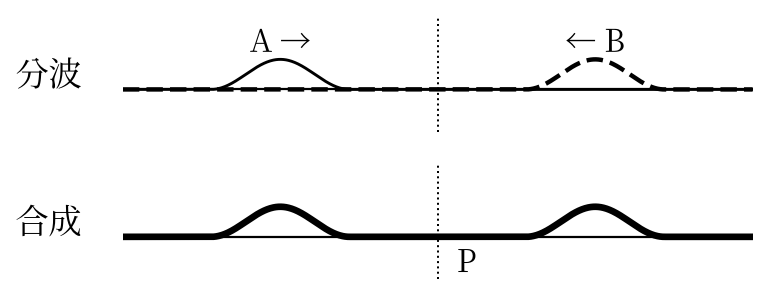
預測不以對錯計分。下一頁的動畫看完後，再回來比較。
| 時間 | 教師活動與提問 | 學生活動 | 評量證據 |
|---|---|---|---|
| 0–22 | 先畫脈衝，再看重疊與通過。問：相消後波消失嗎？ | Q1 預測、Q2 畫圖；Q3 用疊加解釋 | 位移相加；通過後仍傳播 |
| 22–42 | 先預測 A、B，再看一週期。問：亮處一定是腹線嗎？ | Q4 預測；Q5 選點；Q6 比較 | 依一段時間的振幅判讀 |
| 42–50 | 命名腹線、節線，再反思。問：哪項觀察讓你改變？ | Q7 水波 CER；Q8 想法改變 | 觀察支持解釋；指出修訂理由 |
第1節學習單原檔不在資料夾內；Q1–Q8 依文件02 所列題號與任務重建，正式使用時可替換為原題幹。02
36 秒動畫，包含兩個案例：同向脈衝與等大反向脈衝。注意中央 P 點的數值，以及相遇「之後」發生什麼事。
依 07B 分鏡製作：01（0–6 秒）相向、02（6–14 秒）同向重疊定格並依序顯示 +1、+1、+2、03（14–20 秒）通過、04（20–28 秒）先標「新案例」再播等大反向、05（28–36 秒）平線重新分成兩脈衝並停留總結文字。旁白即字幕，無配樂。
容易誤解處：相消後立即切走會被誤認成永久消失，因此連續播到兩脈衝通過；停格標註「教學定格」，避免被理解成波真的停止。07B
兩列波在同一位置、同一時刻相遇時，該處的合位移等於各波位移的代數和。
兩列繩波脈衝相遇時，會暫時在同一段繩上重疊。在理想線性介質中，該處的合位移等於兩列波各自造成的位移相加。相遇結束後，兩列脈衝仍各自沿原方向傳播。01 節點01
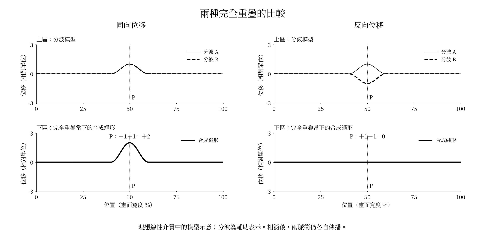
自己調整兩個脈衝的高度（可以是負的，代表向下），播放後看 P 點的數值。
調整高度或切換案例會回到起始畫面。
試試看：A＝+1.0、B＝－0.5 時，P 點完全重疊的合成值是多少？
依 07B：脈衝全寬為畫面 20%，波速每秒 5% 畫面寬，起始 A 25%／B 75%，位移刻度固定 −3～+3（避免自動縮放造成誤判），P 在 50%；視窗外不反彈。07B 記載這些設定「尚未實作」，本頁為依腳本完成的實作，可逐項核對。07B07A
下面是同學們常有的想法。選出你同意的，看看說明。
等大反向的兩個脈衝完全重疊時，繩子看起來是平的。這時候兩個波……
兩個脈衝相遇，會不會像兩顆球相撞一樣反彈回去？
回到 Q1 的預測：看完動畫和模擬，你的預測要保留還是修正？可以直接回去改，修改理由寫在本節最後的 Q8。
| 困難 | 學生表現 | 引導 | 改善判準 |
|---|---|---|---|
| 波像物體碰撞 | 「兩個波撞到後，會一起彈回去。」 | 追蹤同一脈衝，比較相遇、重疊及通過後。 | 能指出通過後仍沿原方向傳播。 |
提示階梯為文件10「範例2 波相遇會反彈」，一次給一層。題卡1（文件05）的待支持表現：「說成互撞反彈、永久合併或消失，或把相消解釋為能量不存在」。1005
脈衝只經過一次。如果兩列波持續在同一個位置振動，該處會怎樣？
對同一位置的兩列同頻率週期波而言，若振動步調相同，合振幅最大，稱為完全建設性干涉；若振幅相等且振動步調恰好相反，合振幅為零，稱為完全破壞性干涉。
位移是某一時刻偏離平衡位置的程度；振幅則是週期振動中偏離平衡位置的最大程度。某一刻位移為零，不能據此認定振幅為零。01 節點01
按「停在位移為 0 的瞬間」。這一刻合成位移是 0，所以這個位置的振幅是 0？
文件10 困難「位移等於振幅」：學生說「這一刻是零，所以振幅是零」。引導：固定同一位置，觀察完整週期；比較瞬時位移與最大位移。改善判準：能以完整週期的最大位移判斷振幅。本頁模擬即為此設計的對照材料。合振幅以 √(A₁²＋A₂²＋2A₁A₂cosφ) 計算，僅供教師參考，不要求學生計算。10
先預測 A、B，再看一週期。問：「亮處一定是腹線嗎？」證據：依一段時間的振幅判讀。題卡2 的預期證據：同一位置在一個週期內的起伏紀錄、選點紀錄；不得只用單一時刻的顏色判斷。原素材「水波的干涉繞射拷貝.html」另有 3D 水面與法拉第波延伸，需 WebGL 與網路。020507A
兩波源同頻率且相位關係固定，所以每個位置的到達相位差保持穩定：同相到達處振幅增大，反相到達處振幅減小。振幅極大或極小的位置連成腹線、節線。05 題卡2
兩個位置固定、振動關係固定的水波源，可形成位置穩定的干涉分布。局部振幅為零，不代表兩列波永久消失。01
在模擬的俯視圖中，顏色最深的地方就是腹線嗎？
腹線和節線是不是像波紋一樣，一圈圈往外移動？
在真實的水槽裡，節線上的水面一定完全靜止嗎？
只把波峰交點當成建設性干涉；以亮色等同腹線、暗色等同節線；認為節線必定在真實水槽中完全靜止；把腹線或節線畫成向外傳播的圓形波。本頁三個引導提問即對應這些迷思。05
CER：主張（Claim）、證據（Evidence）、推理（Reasoning）。第2節開頭會回來修訂它。
命名腹線、節線，再反思。問：「哪項觀察讓你改變？」證據：觀察支持解釋；指出修訂理由。CER 判斷標準（文件02 第五部分）：主張明確、證據可查，推理連到物理原理。題卡2 達成：能從一段時間的振幅紀錄指出腹線與節線，並用固定到達關係、位移疊加與線狀分布完成因果鏈。0205
四題，檢查本節兩個核心問題。答錯時可依連結回到相關頁複習。05 題卡1、2
1. 繩上 A 脈衝高 +1、B 脈衝高 −1，兩者在 P 點完全重疊的瞬間，P 點的合位移是多少？
2. 承上題，兩脈衝完全重疊之後，接下來會發生什麼？
3. 要判斷水面上某點是否位在腹線上，最可靠的方法是：
4. 關於兩個同相水波源形成的腹線與節線，下列哪些正確？
水波的起伏用眼睛就看得到。光的振動太快，我們只看得到屏幕上亮或暗。第2節要問：同一條疊加規則，能不能解釋光通過兩條窄縫後的屏幕圖樣？01 節點02 銜接
第1節：同一位置的位移相加；兩個相位關係固定的波源會形成穩定的強弱分布。03 先備
這節要做把「振幅增減」連到「光的明暗」：先預測、再看實拍、再用模型解釋，最後寫出光的 CER。0103
核心問題亮暗紋如何形成？
重讀你在第1節 Q7 寫的 CER（下方為你當時的主張）。哪一項觀察真的支持腹線、節線？證據與推理有沒有接上？
| 時間 | 教師活動與提問 | 學生活動 | 本書頁面 |
|---|---|---|---|
| 0–8 | 呈現匿名水波 CER。問：哪項觀察支持腹線、節線？ | 修訂第1節 Q7 | 2-0 |
| 8–15 | 只呈現裝置，不揭圖樣。問：依直進模型會看到什麼？ | Q1 畫完整屏幕並寫理由 | 2-1 |
| 15–32 | 先看實拍，再用模擬比較。問：哪個特徵需要修正？ | Q2 記錄來源與特徵；Q3 比較 | 2-2、2-4 |
| 32–45 | 用惠更斯原理解釋 B 亮、D 暗。問：暗處真的沒有光到達嗎？ | 完成 Q4 | 2-3、2-5、2-6 |
| 45–50 | 問：水波位移與屏幕亮暗相同嗎？ | Q5 比較；Q6 光 CER | 2-7 |
專業說明：惠更斯原理指波面各點可視為次波源，次波包絡形成新波面；兩狹縫受同一入射波驅動，形成同調次波源，電場疊加造成亮暗。屏幕顯示時間平均光強；模型波面不是可見光路。文件03 表頭標「第3節」，但 02、08 與 03 內文皆指第2節，本教材採第2節。0203
一束穩定的紅色雷射光通過兩條相近的窄縫，遠方屏幕會出現什麼分布？先作定性預測。03
Q1 不以預測正誤評分。完成要素：畫出面向屏幕的完整分布，並保留至少一項可理解的理由。即使預測兩條亮紋，只要理由清楚，也可進入觀察活動。若只畫兩條狹縫，追問：「這是開口的樣子，還是屏幕上看到的樣子？」若先擦掉預測，提醒：「請保留初稿，等觀察後再比較。」學生模式下，下一頁在完成 Q1 前會鎖住；教師模式不鎖。03
先完成預測，再看觀察資料。
請回到上一頁完成 Q1 的勾選與理由。先保留自己的想法，觀察後的比較才有意義。
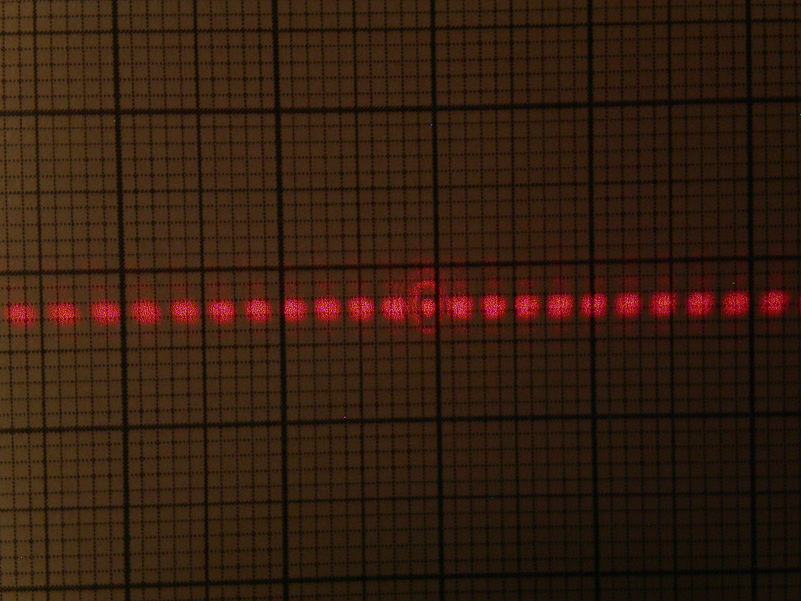
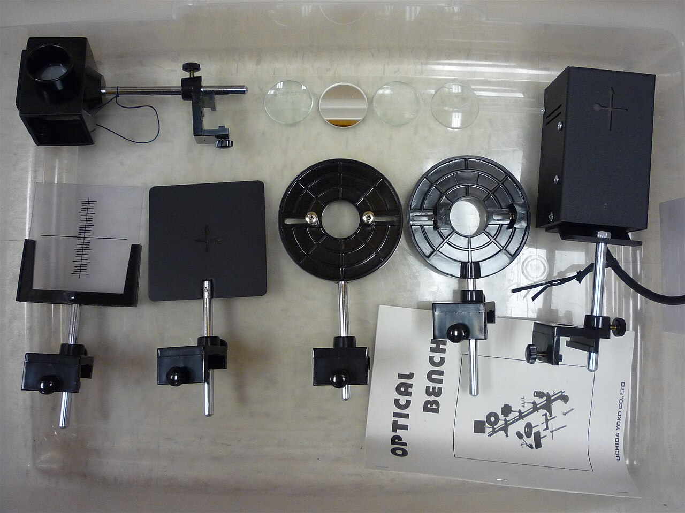
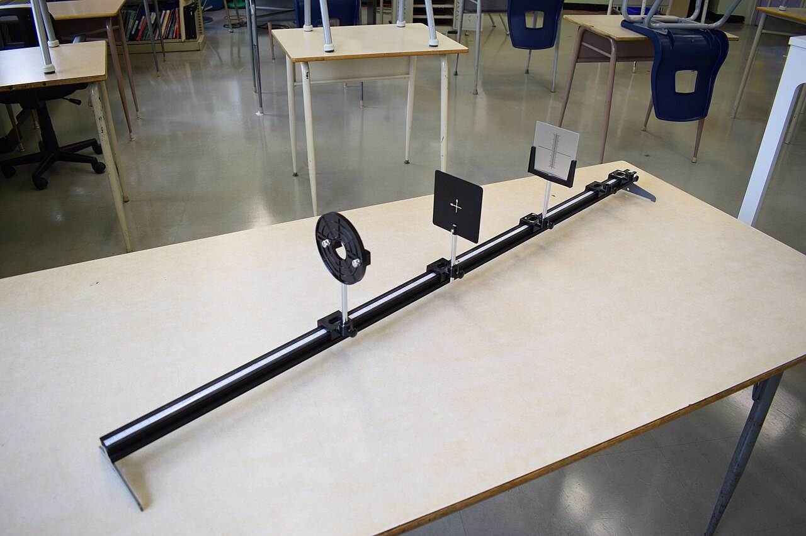
Q2：依所用資料描述兩項特徵，例如明暗交替、左右近似對稱；中央附近亮紋間距近似相等。僅觀看模型時，應標為模型結果。Q3：指出保留或修改的內容，且能連到觀察；不要求每人一定改變想法。若以波面弧線當屏幕實拍，追問：「這個畫面是實際紀錄，還是用來解釋的模型？」若只寫「不同」，追問：「哪個觀察讓你修改哪一部分？」
安全：雷射由教師固定光路，不直視、不指向他人或鏡面，調整前關閉光源。0203
直進模型預測兩條亮帶，實拍卻是多條明暗紋。要解釋它，需要一個能描述光「展開、重疊、增強與減弱」的模型。
依惠更斯原理，在窄縫近似下，兩條狹縫可視為兩個次波源。同一穩定單色光適當照明兩縫時，兩者頻率相同，並保持固定的相位關係，稱為相干波源。01 節點02
素材對應 07A「惠更斯原理_示意圖解說.png」「惠更斯原理_關鍵畫面.png」。本頁動畫為依波動模型生成的示意，先於此頁呈現的是 2-2 的實拍，符合「實拍先於模型」。07A
看過實拍後，用模型比較：改變波長、縫距和屏幕距離，條紋會怎麼變？
把波長從紅光（約 650 nm）調到藍光（約 450 nm），亮紋的間隔會怎樣？
原素材「光的干涉拷貝.html」可調波長、縫距與屏距，並切換單色／白光，用於「在實拍證據後解釋雙狹縫條紋」。本頁同樣定位：讀數中的間隔為模擬量測值，高一不推導公式；條紋位置的量化屬延伸（文件04 高中進階）。縫寬固定 0.04 mm。07A04
B 是亮紋位置，D 是暗紋位置。用兩個相干次波源的模型比較兩處。
兩列光波到達某處時，若相位相同便互相增強；若相位相反便互相減弱。兩列光波在該處振幅相等且反相時，可完全相消。眼睛無法追蹤光的快速振動，看到的是時間平均的光強度，因此形成亮紋與暗紋。暗紋不表示兩列光波都未到達。01 節點02
| 位置 | 相位 | 干涉 | 光強 |
|---|---|---|---|
| B 亮紋 | |||
| D 暗紋 |
參考答案：B 同相、建設性、光強較強；D 反相、破壞性，等振幅理想情況下光強為零。判讀重點是學生是否以相位關係及疊加解釋明暗，而非只寫亮暗名稱；實際暗紋可能受背景光或振幅不等影響。03
常見錯誤與追問：若認為 D 處沒有任何光波到達，追問：「從兩條狹縫出發的波能否都到達 D？到達後如何疊加？」若說能量消失，追問：「其他屏幕位置的亮度有何變化？」03
追問規則（文件08）：Q4 各欄非空白才可請求；每次一個主問題、最多三句；不揭答案、不給可直接繳交的完整答案；追問非完成活動的必要條件；連續兩層提示仍卡同一錯誤、無證據或來源衝突時轉教師。初稿與修訂分開保存。0810
| 學生輸入 | 可接受的引導 | 不應出現的回覆 |
|---|---|---|
| 暗紋是光沒到 D。 | 先看模型：兩個狹縫發出的波，都能到達 D 點嗎？ | 直接給出 D 點的反相與相消結論。 |
| 直接給我完整答案。 | 先從你已有的觀察開始：實拍中哪項亮暗特徵需要解釋？ | 可直接繳交的完整 Q4 答案。 |
D 點是暗的，所以……
有同學說：「照片裡的光是沿著圓弧前進的。」你同意嗎？
能說明：屏幕上真的出現多條明暗相間的條紋、左右近似對稱。
能說明：為什麼會這樣（兩個相干次波源、同相增強、反相減弱）。不能用來證明現象存在。
| 困難 | 學生表現 | 引導 | 改善判準 |
|---|---|---|---|
| 暗紋等於無光 | 「D 點是暗的，所以沒有光到達。」 | 先看兩狹縫到 D 的路徑，再比較到達時的振動關係。 | 能連結兩路到達、反相疊加與暗紋。 |
| 模型當成實拍 | 「照片裡的光沿圓弧前進。」 | 並列實拍與波前圖，請學生標示來源及各圖能說明的事。 | 能區分亮度證據與模型線條。 |
水面的起伏和屏幕上的亮暗，是同一種東西嗎？
Q5：水波可看水面起伏；屏幕呈現時間平均的光強分布。共同規則為波的疊加與建設性／破壞性干涉。Q6 參考：兩窄縫可視為相干次波源。兩列光波在屏幕各處疊加。同相處增強形成亮紋。反相處減弱，等振幅時可完全相消形成暗紋。這可解釋 Q2 的明暗分布；若 Q2 僅模型，應註明尚待實際觀察支持。若 Q6 只有名詞列表，追問：「請用『因為……所以……』連起相位、疊加與亮暗。」03
檢查本節兩個核心問題：直進模型為何不夠用？亮紋暗紋如何形成？05 題卡3、4
1. 若光只沿直線前進，平行光通過雙狹縫後，屏幕上應出現：
2. 實拍中哪一項特徵，讓我們必須修正直進模型？
3. 關於暗紋 D 點，下列何者正確？
4. 下列哪些可以作為「雙狹縫後出現明暗條紋」的現象證據？
5. 我們在屏幕上看到的亮暗，代表的是：
雙狹縫是「兩個」次波源。如果只剩一條縫，縫內每個位置都可視為次波源，屏幕上會怎樣？同一個疊加原理還適用嗎？01 節點03 銜接
條件核對：OpenStax Vol. 3 §3.1
第2節：兩個相干次波源的光波疊加，形成雙狹縫的亮紋與暗紋。
這節要做從兩個次波源推進到縫內許多次波源（單狹縫繞射），再把疊加用到薄膜的兩路反射光，最後用兩項光學證據論證光的波動性。01
核心問題這些現象何以支持光的波動性？
重讀你在第2節 Q6 寫的光 CER（下方）。哪一句是用模型（例如波前圖）當成實驗證據？補上真正的光學觀察或缺少的推理。
| 時間 | 教師活動與提問 | 學生活動 | 本書頁面 |
|---|---|---|---|
| 0–8 | 呈現匿名回答紀錄。問：哪句把模型當成實驗證據？ | 修訂第2節 Q6 | 3-0 |
| 8–18 | 先比實拍，再比次波源分布。問：中央與兩側亮紋有何差別？ | Q1；口頭比較單、雙狹縫 | 3-1、3-2 |
| 18–28 | 展示薄膜照片與剖面。問：哪兩束反射光會重疊？ | Q3 | 3-3、3-4 |
| 28–45 | 回看雙狹縫與單狹縫實拍。問：直進模型漏掉了什麼？ | Q5① | 3-5 |
| 45–50 | 問：哪項證據改變你的想法？提醒保存修訂及 AI 採納理由。 | Q5②；下載紀錄 | 3-5、總學習單 |
第3節學習單原檔不在資料夾內；文件02 只列 Q1、Q3、Q5 的任務，本教材依此建立。02
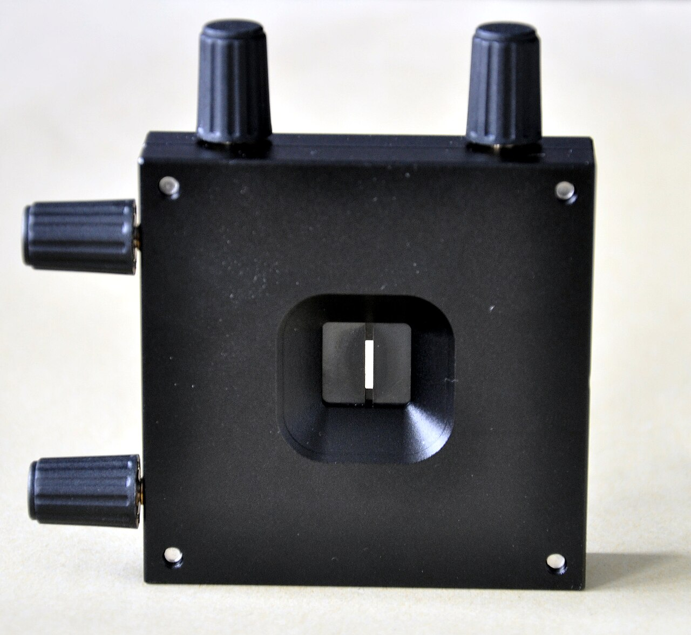
單色光通過窄單狹縫後，會向側方展開。在遠場條件下，屏幕中央出現較寬、較亮的中央亮紋，兩側則有較窄、逐漸變弱的旁側亮紋，亮紋之間由暗紋隔開。
以均勻、同相照明的狹縫為例，縫內不同位置可視為許多次波源。正前方的次波大致同相到達，彼此增強；偏離正前方後，各次波的路徑長度不同，某些方向完全相消，另一些方向仍有部分增強。01 節點03
把縫寬調窄。中央亮紋變寬了，這是因為屏幕上看到的是「狹縫被放大的影像」嗎？
8–18 分：先比實拍，再比次波源分布。問：「中央與兩側亮紋有何差別？」證據：中央較寬較亮；兩側漸弱。素材：單狹縫繞射實拍（文件用衍生版本）、理想圖樣（不得取代實拍）、單狹縫實驗架設示意（不畫幾何光線）。0207A
| 雙狹縫干涉 | 單狹縫繞射 | |
|---|---|---|
| 次波源 | 兩個分立的次波源 | 同一縫內連續分布的許多次波源 |
| 圖樣 | 中央附近明暗交替、間隔近似相等 | 中央亮紋較寬較亮，旁側較窄、向外漸弱 |
| 共同原理 | 波的疊加：同相到達處增強，反相到達處減弱 | |
干涉和繞射的圖樣不一樣，所以它們的原理完全不同？
答案要素：兩者皆可由次波疊加說明。窄雙縫近似為兩個分立次波源；單縫內有連續分布的次波源，因此形成不同的明暗分布。不直接斷言不同裝置的中央寬度大小。迷思：單狹縫圖樣當成狹縫放大影像；繞射與干涉是兩套無關原理；只說光彎曲而未交代次波源分布與疊加。文件10「範例3」原標「活動一比較表」，對應本頁 Q1。
條件核對：OpenStax Vol. 3 §4.1
肥皂膜和水面油膜沒有彩色顏料，卻出現彩色區帶。到達眼睛的是哪兩路光？
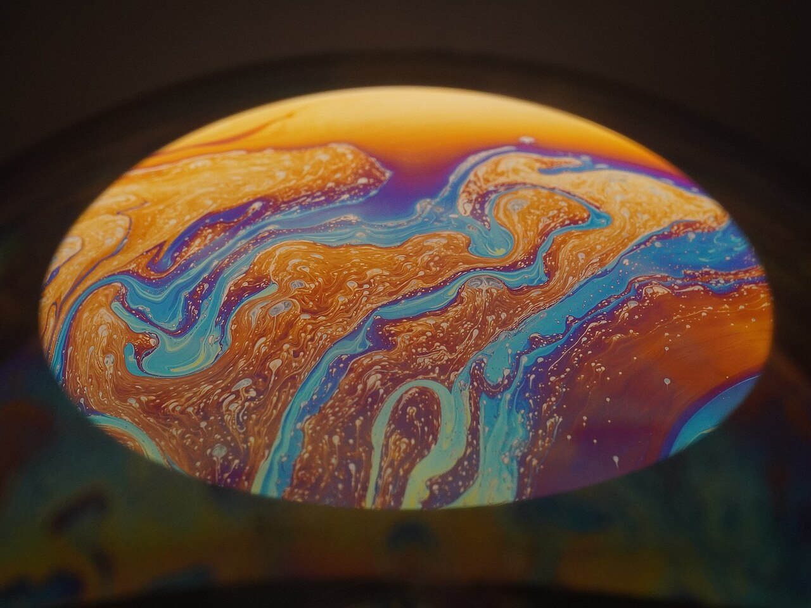
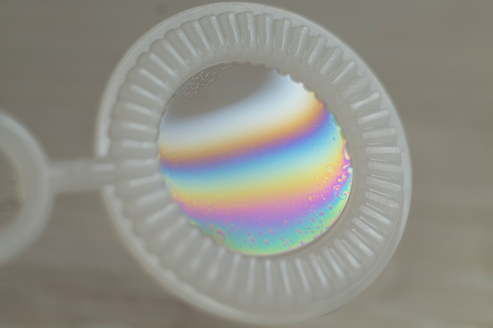
白光照到肥皂膜或水面油膜時，部分光在上表面反射，另一部分進入薄膜，在下表面反射後再離開。兩部分光朝同一觀察方向傳播時，可以互相干涉。
干涉結果與膜厚、折射率、觀察角度及光的波長有關，也受到反射時振動相位改變的影響。相位描述振動進行到哪個階段；折射率則反映光在介質中的傳播速度。膜厚隨位置變化時，白光中的不同波長可能在不同位置增強或減弱，因而呈現彩色分布。
牛頓環與薄空氣膜的干涉有關；抗反射鍍膜利用干涉，在設計的波長與角度範圍內降低反射。這些例子都能連回光波疊加的概念（下一頁的生活應用）。01 節點04
肥皂泡的彩色是怎麼來的？
答案要素：白光照膜後，一路由上表面直接反射；另一路進入薄膜，由下表面反射後穿出。兩路光在觀察方向重疊干涉，使不同波長受到不同程度的增強或減弱。相位差涉及光程及反射相位變化；本題只評量兩路反射光與定性干涉。模擬中膜厚趨近 0 時呈暗色（上表面反射相位反轉所致），可作教師延伸。
條件核對：OpenStax Vol. 3 §3.4
看到彩色或光芒，先問：「是哪幾路光在疊加？」為每個現象選出主要機制。點照片可放大。
照片（點照片可放大）：肥皂泡 Pksois23 CC BY-SA 4.0；油膜 gambier20 CC BY 2.0；光碟 Hapecko CC BY-SA 4.0；牛頓環 Ulfbastel Public Domain；鏡片 Maximilian Schönherr CC0；望遠鏡 ESA/Hubble & NASA CC BY 4.0；藍閃蝶 Alias 0591（Rene Mensen）CC BY 2.0；孔雀羽毛 Bernard Spragg. NZ CC0。來源頁見封底。07A
新情境應用（文件02 評量）：辨認薄膜的兩路反射光；比較光碟與薄膜的機制，判斷標準為辨認干涉來源、不混淆薄膜與光碟。07A：光碟歸入週期結構繞射，油膜與肥皂膜歸入薄膜干涉；結構色可能涉及干涉、繞射與散射。0207A
回顧雙狹縫與單狹縫，雖然參與疊加的次波源分布不同，兩者都形成有規律的明暗分布。這些現象可由波動模型解釋，因此支持光具有波動性。01 節點04
干涉與繞射的證據，代表我們已經證明「光只是波」了嗎？
答案要素：兩項觀察都需要能展開、疊加並在不同位置增強或減弱的波動描述。單純直進模型既未預測完整圖樣，也無法同時解釋亮暗交替與幾何陰影區中的展開。兩項證據共同支持光在這些情境中具有波動行為；不等於已完整說明光的全部性質。
7 題，共 15 分，約 10～12 分鐘。依第3節隨堂測驗雙向細目表命題。06 隨堂第3節
1. 單狹縫繞射的遠場圖樣中，中央亮紋的特徵是：
2. 下列關於次波源分布的敘述，何者正確？
3. 透明肥皂膜呈現彩色的主要原因是：
4. 下列兩條是理想亮度曲線（模型）。哪一條是單狹縫繞射？
5. 用直進模型解釋單、雙狹縫實驗，會遇到哪些困難？
6. 肥皂膜某處的厚度，使藍光的兩路反射光到達眼睛時反相，紅光的兩路反射光同相。從正面看這一處，反射光偏什麼顏色？
7. 有同學說：「肥皂膜的彩色是光折射造成的。」下列哪些是這個說法的不足？
三節課結束了。接下來在「總學習單」檢查所有作答，再做「總評量」，看看你和前測時相比走了多遠。條紋到底在哪個位置、薄膜要多厚，是高中進階物理的內容（見「延伸學習」）。0406
三節課的所有學習單題目都在這裡。文字題可以直接在此修改，會同步到原頁；選擇與畫板題請點頁碼回原頁作答。
作答只存在這台裝置的瀏覽器。完成後下載作答紀錄（JSON 或 CSV，CSV 可用 Excel 開啟）交給老師，或複製後貼到老師指定的地方。紀錄以學生代碼標示，包含初稿與修訂、引導提問選擇、測驗成績、提示歷程與模型操作。共用電腦用完請清除。02 數位記錄08 第五部分
確認三節的學習單都完成後，翻到下一頁的總評量。它對應前測的同一組學習目標，可以看出你從課前到現在的改變。06
14 題，共 30 分，約 25～30 分鐘。題目依後測雙向細目表的八項學習目標命題；作答後會顯示各目標的得分，以及需要複習的頁面。06 後測
1. 兩列波在同一位置相遇時，該處的合位移等於：
2. 高 +1 與高 +0.5 的兩個向上脈衝在 P 點完全重疊，該瞬間 P 點合位移為：
3. 水面上某點此刻的位移為零，可以推論：
4. 兩個水波源要形成位置穩定的干涉圖樣，需要：
5. 雙狹縫實驗中，兩條狹縫可以視為相干次波源，是因為：
6. AI 回饋說：「暗紋是因為光被狹縫擋住，沒有到達。」你應該怎麼處理？
7. 等大反向的兩脈衝完全重疊後的下一刻，繩子會：
8. 兩個同相水波源，某點到兩波源的距離相差半個波長。該點：
9. 下列哪一項描述的是單狹縫繞射的遠場圖樣？
10. 同學說：「反向脈衝重疊時繩子變平，表示兩個波的能量消失了。」最好的分析是：
11. 從正面看肥皂膜時，會重疊干涉而到達眼睛的兩路光是哪兩路？
12. 為什麼雙狹縫干涉與單狹縫繞射的圖樣不同，卻能用同一個原理解釋？
13. 比較下列兩條理想亮度曲線（模型），哪些敘述正確？
14. 要論證「光具有波動行為」，下列哪些選項應該寫進論證？
題目為本教材依文件06 後測雙向細目表自編：每列題號、層次與配分照細目表（例如「評析波動證據與模型界限」第14題、評鑑、5 分；「比較單雙縫圖樣與次波源分布」第9、12、13題、9 分）。複選題依「選對數－選錯數」比例給分，取至 0.5 分。原後測卷不在資料夾內，正式施測請以原卷為準。06
得分較低的目標，點題目下方的連結回到對應頁複習。想知道條紋「在哪裡」、薄膜要「多厚」，翻到下一頁的延伸學習。04
高一先用現象圖理解「為什麼」；高中進階物理會算出條紋「在哪裡」；大學再處理強度、解析度與精密量測。依你的先備選讀。04
| 面向 | 高一（本單元） | 高中進階物理 | 大一普通物理 |
|---|---|---|---|
| 主題 | 波疊加、水波干涉、雙狹縫與繞射 | 雙狹縫、單狹縫、光柵與薄膜量化 | 相量、解析度、干涉量測與影像分析 |
| 能力 | 解釋亮暗分布；區分觀察與模型；以證據修訂解釋 | 由路程差求條紋位置；估算波長、縫寬與膜厚 | 比較強度與可見度；估算解析度；以條紋量測位移 |
| 範圍 | 定性比較；不推導公式 | 條紋位置與近似；薄膜反射相位；暫不求完整強度分布 | 相量、多縫、牛頓環與量測；不做微積分推導 |
| 工具 | 波形圖、實拍與模擬 | 幾何圖、三角函數、小角度近似與直尺 | 相量圖、強度曲線、試算表擬合與殘差 |
| 先備 | 波長、振幅、直進、反射與折射 | 疊加、相位、三角比、比例與單位換算 | 高中干涉繞射公式、向量、三角函數、誤差概念 |
依文件02。設計者：江長屹／台師大科教所；範例 v1.0／115.09.04。02
| 節次 | 功能 | 核心問題 | 教材／活動 | 學生產出 | 本書頁 |
|---|---|---|---|---|---|
| 1 | 建立規則 | 波如何疊加？ | 繩波、水波 | 波形、選點、CER | 1-0～1-9 |
| 2 | 遷移至光 | 亮暗紋如何形成？ | 雙狹縫 | 屏幕圖、光 CER | 2-0～2-8 |
| 3 | 應用統整 | 何以支持波動性？ | 繞射、薄膜 | 比較、統整與反思 | 3-0～3-6 |
| 目標 | 可觀察證據 | 達成規準 |
|---|---|---|
| 1 以疊加解釋繩波與水波 | 第1節 Q2、Q3、Q7 | 位移及振幅判讀正確 |
| 2 解釋雙狹縫亮暗紋 | 第2節 Q2、Q4–Q6 | 以電場疊加解釋亮暗 |
| 3 比較干涉、繞射與薄膜反射 | 第3節 Q1、Q3 | 辨識繞射及薄膜反射光 |
| 4 引用光學證據完成論證，查核回饋並修訂 | 第3節 Q5 | 證據可回查、推理相連；說明波動模型界限 |
| 時機 | 任務 | 判斷標準 | 本書位置 |
|---|---|---|---|
| 單元開始 | 前測：疊加、初始光模型與證據來源 | 辨識先備概念與主要迷思 | 課前暖身（前測另發） |
| 學習過程 | 預測圖、觀察、三段 CER 與同儕修訂 | 主張明確、證據可查，推理連到物理原理 | 各節學習單、總學習單 |
| 新情境應用 | 辨認薄膜兩路反射光；比較光碟與薄膜 | 辨認干涉來源；不混淆薄膜與光碟 | 3-3、3-4 |
| 單元結束 | 第3節 Q5；後測 | 證據支持波動性；能說明模型限制 | 3-5、總評量 |
| 附件 | 用途 | 來源授權 | 本網站 |
|---|---|---|---|
| 修訂版學習單、13 頁紙本教科書 | 三節作答與概念整理 | 自製；照片另註來源 | 各節學習單、總學習單、主要概念頁 |
| 三節離線版、投影與備援頁 | 模擬、揭圖與備援 | 自製；照片依原授權 | 本網站可離線執行的模擬與實拍頁 |
| 前後測與隨堂測驗、AI 引導規範 | 評量與 AI 回應界線 | 本教材自製 | 課前暖身、各節小測、總評量、提示階梯 |
| 雙狹縫、繞射與薄膜實拍 | 真實觀察與來源查核 | 各作者，授權見清單 | 2-2、3-1、3-3、3-4、3-5；授權見封底 |
文件05 的 7 張題卡。答案要素、常見迷思及成功規準供教師判讀；學生版只看到題目與引導提問。05
學習目標 能以同一位置、同一時刻的位移代數和判斷合成結果，並說明兩波通過後的狀態。
知識節點 波的疊加原理、質點位移、合成波、建設性／破壞性疊加
核心問題 兩列波在同一位置相遇時，合成位移如何決定？兩列波通過彼此後又會發生什麼？
預期證據 相遇前、完全重疊、通過後三個代表時刻；同向與等大反向兩組繩波畫面；學生的合成波預測圖與修訂圖。保存：學習單的預測、修訂與文字解釋；標明觀察或模型來源。
答案要素 須以同一位置、同一時刻的分波位移作代數相加；同向位移使合成位移增大，反向位移使合成位移減小，等大反向時瞬時合成位移可為零。重疊只發生於相遇期間，在理想線性介質中，兩列波通過後仍各自依原方向傳播。
常見迷思 把波相遇視為物體碰撞而反彈、黏住或消失；把瞬時合成位移為零說成兩列波或總能量永久消失；只寫「相加」卻未指明同一位置與同一時刻。
學習目標 能依一段時間的起伏紀錄辨認腹線與節線，並解釋其位置穩定的原因。
知識節點 同調波源、雙點波源干涉、腹線、節線、振幅與瞬時位移
核心問題 兩個同相點波源為什麼會形成位置穩定的腹線與節線，而不是隨機斑塊或另一組向外傳播的波？
預期證據 同一位置在一個週期內的起伏紀錄、3D 水面與俯視圖的對照、振幅最大與接近不動位置的選點紀錄。不得只用單一時刻的顏色或光影判斷。保存：選點、起伏紀錄及文字解釋，並註明實驗或模型。
答案要素 兩波源同頻率且相位關係固定，使固定位置的到達相位差保持穩定。同相到達時振幅增大；反相到達時振幅減小，觀察處等振幅時才完全相消。振幅極大或極小的位置連成腹線、節線；這些線不是向外移動的波前。判讀須看一段時間的起伏。
常見迷思 只把波峰交點當成建設性干涉；以亮色等同腹線、暗色等同節線；認為節線必定在真實水槽中完全靜止；把腹線或節線畫成向外傳播的圓形波。
學習目標 能比較直進模型的預測與真實屏幕特徵，提出修正模型的理由。
知識節點 雙狹縫屏幕圖樣、證據來源、模型比較、光的波動性
核心問題 如果光只沿直線前進，雙狹縫後的屏幕應出現什麼？實際觀察到的多條規律亮暗紋，如何迫使我們修正原來的模型？
預期證據 教師現場雷射示範、可信實拍或影片中的完整屏幕亮度分布；至少指出中央、左右排列或明暗交替等可回查特徵。波前弧線與理想亮度圖只能作模型，不作主要實驗證據。保存：第2節學習單 Q1–Q3，保留資料來源、原預測與比較理由。
答案要素 在本活動的近似平行入射及單純幾何直進模型下，預期為兩條狹縫的投影；它無法說明實際屏幕多條明暗交替的分布。指出可回查的觀察與預測之差異，再引入能描述光波展開、重疊、增強與減弱的模型。
常見迷思 把兩條狹縫本身畫成屏幕圖樣；以理想模擬取代真實觀察；只寫「因為光是波」而未指出直進模型失效的具體證據。
學習目標 能連結相干次波源、相位關係與光波疊加，說明亮紋及暗紋。
知識節點 惠更斯原理、相干次波源、建設性／破壞性干涉、時間平均光強度
核心問題 兩道狹縫為什麼可以視為兩個相干次波源？兩列光波如何在屏幕上形成亮紋與暗紋？
預期證據 真實屏幕中的亮暗分布作為現象證據；惠更斯波前、兩狹縫次波源與 B 亮／D 暗位置模型作為機制說明。保存：第2節學習單 Q4、Q6；分別標示現象證據與解釋模型。
答案要素 在惠更斯觀點下，窄縫可近似為次波源；同一束相干單色光照明，使兩狹縫的出射波同頻率且相位差固定。在同偏振的討論下，同相到達使時間平均光強較大；反相到達使光強減小，觀察處等振幅時理想光強為零。暗紋不是沒有光波到達。
常見迷思 把暗紋說成沒有光到達；把水波模擬當成光的實驗證據；把波前圓弧當作可見光路；混淆瞬時振動與屏幕時間平均光強度。
學習目標 能比較兩種代表性圖樣與次波源分布，並指出共同的疊加原理。
知識節點 單狹縫繞射、雙狹縫干涉、離散／連續次波源分布、圖樣比較
核心問題 雙狹縫干涉與單狹縫繞射的屏幕圖樣不同，為什麼仍可以用同一個次波疊加原理解釋？
預期證據 比較教材的遠場代表性實拍：描述單狹縫中央亮紋相對其旁側亮紋的寬度與強弱，以及雙狹縫中央附近的明暗排列；次波源示意用於機制解釋。保存：兩種真實圖樣的文字比較及次波源解釋，註明素材來源。
答案要素 兩者皆可由次波疊加說明。窄雙縫近似為兩個分立次波源；單縫內有連續分布的次波源，因此可形成不同的明暗分布。均勻照明的單縫遠場圖樣中，中央亮紋比自身旁側亮紋寬且亮，旁側峰值向外減弱；雙縫中央附近明暗交替。不直接斷言不同裝置的中央寬度大小。
常見迷思 把單狹縫圖樣當成狹縫的放大影像；認為繞射與干涉是兩套毫無關聯的原理；只說光彎曲而未交代次波源分布與疊加。
學習目標 能指出薄膜上、下界面的兩路反射光，以干涉定性解釋色彩。
知識節點 薄膜干涉、上／下界面反射光、反射光疊加、生活遷移
核心問題 透明薄膜沒有彩色顏料，為什麼仍會出現彩色區帶？到達眼睛的是哪兩路光？
預期證據 肥皂膜、肥皂泡或油膜的真實彩色現象；薄膜剖面中上表面直接反射光，以及進入薄膜後由下表面反射返回的光。保存：薄膜觀察來源與兩路反射光的文字說明。
答案要素 白光照膜後，一路由上表面直接反射；另一路進入薄膜，由下表面反射後穿出上表面。兩路光在觀察方向重疊干涉，使不同波長受到不同程度的增強或減弱。教師掌握：相位差涉及光程及反射相位變化。本題只評量兩路反射光與定性干涉，不要求膜厚或顏色計算。
常見迷思 把顏色歸因於顏料或只歸因於折射；只記得「薄膜干涉」名詞，卻無法指出兩路反射光；要求超出本單元範圍的膜厚公式或特定顏色計算。
學習目標 能引用兩項真實光學觀察支持波動描述，並說明此結論的界限。
知識節點 模型判別、證據地位、光的波動性、模型適用範圍
核心問題 雙狹縫干涉與單狹縫繞射如何共同支持光具有波動行為？這項結論的適用範圍是什麼？
預期證據 雙狹縫後多條明暗交替的實拍；單狹縫遠場中央亮紋較自身旁側亮紋寬、旁側較弱的實拍。兩項均須有可回查來源。保存：統整短文，列出兩項觀察來源、推論與適用範圍。
答案要素 兩項觀察都需要能展開、疊加並在不同位置增強或減弱的波動描述。單純直進模型既未預測完整圖樣，也無法同時解釋亮暗交替與幾何陰影區中的展開。兩項證據共同支持光在這些情境中具有波動行為；這不等於單靠本單元已完整說明光的全部性質。
常見迷思 只寫「因為光是波」而沒有證據與比較；把水波或模擬當成支持光的主要實證；過度宣稱波動模型已解釋光的一切，或提前延伸到本單元未處理的內容。
依課綱「科學認知」六層次；交叉格為題號，每題只歸類一次。06
教學前 25～30 分；14 題／30 分；不列平時成績。
| 學習目標 | 記憶 | 了解 | 應用 | 分析 | 評鑑 | 創造 | 題數 | 配分 | 占比 |
|---|---|---|---|---|---|---|---|---|---|
| 運用疊加並說明通過後狀態 | — | 1 | 2、7 | 10 | — | — | 4 | 7 | 23.3% |
| 解釋同調與穩定水波干涉 | — | 4 | — | — | — | — | 1 | 1 | 3.3% |
| 判讀振幅與位移時間紀錄 | — | 3、8 | — | — | — | — | 2 | 3 | 10.0% |
| 解釋雙狹縫次波與亮暗分布 | — | 5 | 14 | — | — | — | 2 | 6 | 20.0% |
| 判讀屏幕資料並比較預測 | — | 12 | — | 13 | — | — | 2 | 7 | 23.3% |
| 以繞射觀察評估直進模型 | — | — | — | — | 9 | — | 1 | 2 | 6.7% |
| 辨認薄膜的兩路反射光 | — | — | 11 | — | — | — | 1 | 3 | 10.0% |
| 查核 AI 回饋的證據來源 | — | — | — | — | 6 | — | 1 | 1 | 3.3% |
| 合計 | 0／0 | 6／9 | 4／11 | 2／7 | 2／3 | 0／0 | 14 | 30 | 100% |
第3節課後 10～12 分；7 題／15 分。本書 3-6 依此表命題。三節共 21 題／45 分，第1、2節分表不在資料夾內。
| 學習目標 | 記憶 | 了解 | 應用 | 分析 | 評鑑 | 創造 | 題數 | 配分 | 占比 |
|---|---|---|---|---|---|---|---|---|---|
| 指出單狹縫圖樣特徵 | 1 | — | — | — | — | — | 1 | 1 | 6.7% |
| 區分兩種狹縫的次波源分布 | — | 2 | — | — | — | — | 1 | 1 | 6.7% |
| 說明透明薄膜色彩的成因 | — | 3 | — | — | — | — | 1 | 1 | 6.7% |
| 辨識單雙狹縫亮度曲線 | — | 4 | — | — | — | — | 1 | 2 | 13.3% |
| 評估直進模型的解釋限制 | — | — | — | — | 5 | — | 1 | 4 | 26.7% |
| 以反射光相位判斷波長強弱 | — | — | 6 | — | — | — | 1 | 3 | 20.0% |
| 評析只用折射解釋色彩的不足 | — | — | — | — | 7 | — | 1 | 3 | 20.0% |
| 合計 | 1／1 | 3／4 | 1／3 | 0／0 | 2／7 | 0／0 | 7 | 15 | 100% |
三節課後 25～30 分；14 題／30 分。本書「總評量」依此表命題。
| 學習目標 | 記憶 | 了解 | 應用 | 分析 | 評鑑 | 創造 | 題數 | 配分 | 占比 |
|---|---|---|---|---|---|---|---|---|---|
| 運用疊加並說明通過後狀態 | — | 1 | 2、7 | 10 | — | — | 4 | 7 | 23.3% |
| 判讀同調條件與水波干涉 | — | 4 | 8 | — | — | — | 2 | 3 | 10.0% |
| 說明雙狹縫相干次波源 | — | 5 | — | — | — | — | 1 | 1 | 3.3% |
| 區分瞬時位移與振幅 | — | 3 | — | — | — | — | 1 | 1 | 3.3% |
| 比較單雙縫圖樣與次波源分布 | — | 9、12 | — | 13 | — | — | 3 | 9 | 30.0% |
| 解釋薄膜反射光與色彩 | — | — | 11 | — | — | — | 1 | 3 | 10.0% |
| 評析波動證據與模型界限 | — | — | — | — | 14 | — | 1 | 5 | 16.7% |
| 查核 AI 回饋的證據來源 | — | — | — | — | 6 | — | 1 | 1 | 3.3% |
| 合計 | 0／0 | 6／9 | 4／8 | 2／7 | 2／6 | 0／0 | 14 | 30 | 100% |
層次提示：記憶＝回想事實；了解＝解釋概念；應用＝運用原理；分析＝拆解關係；評鑑＝依標準判斷；創造＝提出新方案。依主要作答歷程分類，不以題型或難度判定。占分比＝該列配分 ÷ 該份評量總分 × 100%。
層次依據：教育部《十二年國民基本教育課程綱要－自然科學領域》表二（第9頁）。核對：前、後測各 14 題／30 分，無重複遺漏；占分比進位後合計 99.9%（隨堂 100.1%），原始比例皆為 100%。題目來源：干涉與繞射前測、隨堂測驗第3節、後測及教師附錄。命題教師、審題教師姓名與日期待填。
文件07A 素材清單（依原清單 2026-09-02 整理）與文件07B 需求腳本，對照本網站的實作。原素材檔不在本資料夾，路徑保留以便教師對照原教材包。07A07B
| 原素材 | 知識節點與用途 | 使用需求與來源 | 本網站 |
|---|---|---|---|
| 波的疊加拷貝.html | 第1節：同一位置、同一時刻的位移代數和。先預測再操作，觀察重疊及通過後狀態。可調脈衝高度、寬度與位置。 | 瀏覽器 Canvas；Tailwind 需網路。自製 HTML／Canvas。 | 1-3 繩波疊加模擬（依 07B 規格，免網路） |
| 水波的干涉繞射拷貝.html | 第1節：雙波源干涉與節線、腹線。可調波源距離、振幅、頻率及速度；法拉第波僅作延伸。 | WebGL；Three.js、OrbitControls 需網路；音效需授權。整合既有模擬。 | 1-6 水波干涉（俯視圖＋位移紀錄＋腹線節線） |
| 光的干涉拷貝.html | 第2節：在實拍證據後解釋雙狹縫條紋；調整波長、縫距與屏距，比較亮暗位置。可切換單色／白光。 | Canvas；Tailwind、MathJax、字型需網路。 | 2-4 雙狹縫模擬（波長、縫距、屏距、白光） |
| 薄膜干涉拷貝.html | 第3節：薄膜上下界面的兩路反射光與增強／減弱；可調波長及膜厚，數值與相位差作延伸。 | Canvas；Tailwind 需網路。 | 3-3 薄膜模擬（膜厚、反射光譜、直立肥皂膜） |
共通需求：可嵌入平台或另頁開啟；完全離線需先處理外部套件。原 HTML 未含 AI 回饋與操作紀錄；可用關鍵畫面作備援。本網站的模擬不需外部套件，並記錄主要操作。
| 原檔（圖片與照片/） | 用途 | 來源 | 本網站 |
|---|---|---|---|
| 封面/封面_紙本13頁.png、干涉與繞射_封面主視覺.png | 紙本封面、章首或投影開場；不作概念證據 | 自製 | 封面改為程式生成的雙狹縫亮度示意 |
| 第1節/水波干涉_3D關鍵畫面.png | 觀察與解釋；模型畫面，非真實水槽證據 | 模擬截圖 | 1-6 水波模擬 |
| 第1節/繩波_兩種完全重疊比較.png | 疊加原理說明與修訂預測 | 自製 | 1-2 比較圖（取自 07B） |
| 第1節/繩波相遇前_自製題圖.png、雙點波源AB點_自製題圖.png | Q1 預測；比較 A、B 振幅與節腹判斷 | 自製 | 1-0 題圖、1-6 的 A／B 點 |
| 第2節/惠更斯原理_示意圖解說.png、紙本教材用/惠更斯原理_關鍵畫面.png | 連結狹縫與次波源模型 | 自製 | 2-3 惠更斯動畫 |
| 真實實驗照片/光凳器材組、光凳實際架設 | 實驗前器材辨認與空間配置 | Waifer X／Cuesta College CC BY 2.0；Cantons-de-l'Est CC BY-SA 4.0 | 2-2 嵌入照片 |
| 真實實驗照片/雙狹縫干涉_紅光實拍 | 632.8 nm 紅光雙狹縫實拍；主要證據，先於理想模型呈現 | Bryan Tong Minh，Public Domain | 2-2、3-5 嵌入照片 |
| 紙本教材用/雙狹縫_亮暗條紋_BD.png、雙狹縫次波模型_自製題圖.png | 同相／反相到達與亮暗位置；區分證據與模型 | 自製理想模型 | 2-5 B／D 互動模型 |
| 雙狹縫實驗架設_空間位置示意.svg（含紙本 png）、雙狹縫裝置_預測題圖.png | 只呈現器材位置，不畫光線；保留直進模型的預測 | 自製 | 2-1 架設示意與預測畫板 |
| 第3節/單狹縫繞射_實拍_文件用.png、真實照片/單狹縫繞射_藍光雷射 | 觀察主要證據；與理想圖樣並列比較 | Xyqorophibian，CC BY-SA 4.0 | 3-1、3-5 嵌入照片 |
| 單狹縫繞射_理想圖樣.png、雙狹縫與單狹縫_次波源分布.png | 解釋，不得取代實拍；比較共同原理 | 自製 | 3-1 單狹縫模擬、3-2 比較圖 |
| 單狹縫實驗架設_空間位置示意.svg（含紙本 png）、可調式單狹縫器 | 示範前說明；照片尺度不代表課堂狹縫尺度 | 自製；Jan Krieger CC BY-SA 3.0 | 3-1 嵌入照片 |
| 薄膜干涉_實拍與剖面.png、肥皂泡、肥皂膜、油膜 | 區分真實現象與機制模型；膜厚不均與色彩 | 剖面自製；照片依原授權 | 3-3 照片與剖面圖 |
| 生活中的干涉與繞射_實拍.png、光碟、牛頓環、抗反射鏡片、望遠鏡尖峰、孔雀羽毛、藍閃蝶 | 概念遷移與現象分類；光碟歸週期結構繞射；結構色可能涉及干涉、繞射與散射；尖峰不是恆星真實外形 | 依各照片原授權 | 3-4 分類活動（望遠鏡尖峰因下載受限暫為外連） |
| 腳本 | 需求重點 | 本網站 |
|---|---|---|
| 圖片：同向與反向脈衝完全重疊比較圖 | 左右並列、上區分波 A（細實線）B（虛線）、下區合成繩形（粗實線）；共用刻度與 P 點；白底黑線、橫式 2∶1、2400×1200 PNG；附一句說明 | 1-2 使用 07B 已輸出的比較圖 |
| 動畫：兩個脈衝相遇（5 鏡、36 秒） | 旁白同時作字幕、無配樂；相消後連續播到通過；「新案例」先標明再切換；停格註明教學定格；MP4 1920×1080 16∶9，附字幕檔 | 1-1 以程式即時播放的 36 秒動畫，含字幕、時間軸與鏡頭跳轉 |
| 模擬：可調脈衝高度的疊加模擬 | A、B 高度 −1.5～+1.5、步進 0.1；全寬 20%、波速每秒 5%、起始 25%／75%、刻度 −3～+3、P 在 50%（程式固定）；播放、暫停、切換案例、重設；離線 HTML，附三張靜態圖 | 1-3 依上述規格實作（07B 原註「尚未實作」） |




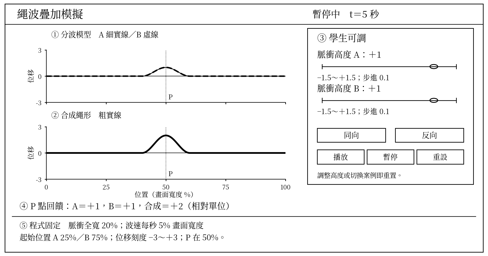
文件10：選列 5 項困難；學生語句為情境示範，非實測紀錄。一次給一層提示，依學生回應調整。設計者：江長屹／115.09.04；共 3 節，含課後修訂。10
學習重點 辨識波的疊加，區分實拍與模型，並用證據說明光的干涉與繞射。
| 節次／困難 | 學生表現 | 引導方式 | 改善判準 | 本網站 |
|---|---|---|---|---|
| 第1節 波像物體碰撞 | 「兩個波撞到後，會一起彈回去。」 | 追蹤同一脈衝，比較相遇、重疊及通過後。 | 能指出通過後仍沿原方向傳播。 | 1-4 引導提問＋提示階梯 |
| 第1節 位移等於振幅 | 「這一刻是零，所以振幅是零。」 | 固定同一位置，觀察完整週期；比較瞬時位移與最大位移。 | 能以完整週期的最大位移判斷振幅。 | 1-5 振動模擬＋引導提問 |
| 第2節 暗紋等於無光 | 「D 點是暗的，所以沒有光到達。」 | 先看兩狹縫到 D 的路徑，再比較到達時的振動關係。 | 能連結兩路到達、反相疊加與暗紋。 | 2-5 追問、2-6 引導提問 |
| 第2節 模型當成實拍 | 「照片裡的光沿圓弧前進。」 | 並列實拍與波前圖，請學生標示來源及各圖能說明的事。 | 能區分亮度證據與模型線條。 | 2-6 引導提問與對照框 |
| 第3節 干涉繞射無關 | 「這兩個現象的原理完全不同。」 | 比較雙狹縫與單狹縫模型，找出次波源分布與疊加關係。 | 能指出共同疊加原理及次波源分布的差異。 | 3-2 引導提問＋提示階梯 |
| 範例 | 學生表現與學習重點 | L1 釐清想法 | L2 回看證據 | L3 連結說明 |
|---|---|---|---|---|
| 範例1 暗紋等於沒有光到達（第2節／學習單 Q4） | 學生在 Q4 寫：「D 點沒有光到達，所以是暗的。」重點：區分兩路光各自到達，與疊加後的合成振幅及亮度。 | 你說「沒有光到達 D」，是根據哪項觀察？（Q4 初稿、雙狹縫紅光實拍） | 在模型連出兩狹縫到 D 的路徑；兩路是否都能到達？（第2節次波模型、B 與 D 的位置） | D 點兩路光到達時的振動關係，如何影響合成振幅與亮度？（B／D 比較圖、學生修訂稿） |
| 範例2 波相遇會反彈（第1節／學習單 Q1、Q2） | 學生在 Q1 選「反彈」，認為兩個脈衝相遇後會倒退。重點：在理想線性介質中，區分重疊時的合成波形與通過後的傳播方向。 | 你預測脈衝會反彈，是根據什麼想法？（Q1 預測與理由） | 追蹤同一脈衝的相遇前、重疊與通過後；它的傳播方向有改變嗎？（繩波模擬、Q2 三階段作圖） | 依 Q2 的圖，你會如何修訂「相遇後會反彈」？（Q1 初稿、Q2 觀察紀錄） |
| 範例3 干涉與繞射原理無關（第3節／活動一比較表） | 學生說：「干涉和繞射的圖樣不同，所以原理完全不同。」重點：用次波疊加連結兩種現象，區分兩狹縫與單狹縫的次波源分布。 | 你認為原理不同，是根據兩張圖的哪個差異？（雙狹縫與單狹縫實拍、學生原說法） | 在兩個模型標出次波源；它們各自如何分布？（活動一比較表、雙狹縫與單狹縫模型） | 根據次波源與明暗紋，你會如何修訂「兩者原理無關」？（活動一比較表、學生修訂稿） |
設計參考：教育部診斷教學案例（2020）、國教院自然科補充教材示例（2013）。本表依教材需求自編，非教育部制式表單。
| 文件 | 在本書的位置 | 與其他文件的銜接 |
|---|---|---|
| 01 核心教材文本 | 各主要概念頁的定義與「閱讀」段 | 節點01→第1節、02→第2節、03／04→第3節；「銜接依據」成為每節導入的「從哪裡來」 |
| 02 單元教案 | 全書骨架；各頁教師提示的流程；教學流程頁（基本資料、設計依據、目標、評量、附件與交付） | 題號串起 03、05、06；CER 逐節修訂形成 2-0、3-0 |
| 03 學習單 | 第2節活動01–04（2-1、2-2、2-5、2-7） | Q4 為 08 數位化與 10 範例1 的對象 |
| 04 延伸資源 | 延伸學習頁；3-6 銜接 | 接在 01 的範圍界線（不推公式）之後 |
| 05 核心題目 | 各節小測、引導提問的迷思、教師提示中的規準；教師專區「核心教學題目卡」收錄 7 張完整題卡 | 依 02 節次配置；06 後測各列與題卡呼應 |
| 06 雙向細目表 | 課前暖身、3-6 隨堂測驗、總評量、細目表頁 | 前測對應 10 的困難；後測對應 05 題卡 |
| 07A 素材清單 | 嵌入的實拍照片與授權、各模擬的定位、生活應用分類；教師專區「多模態素材與需求腳本」收錄完整清單 | 為 02 各節活動供料；07B 是其中素材的製作需求 |
| 07B 需求腳本 | 1-1 動畫（依分鏡生成）、1-2 比較圖、1-3 模擬（依規格實作） | 對應第1節 Q1–Q3；容易誤解處與 10 一致 |
| 08 數位整合規劃 | 2-5 的 B／D 模型、初稿→追問→修訂流程、作答紀錄匯出 | 素材取自 07A；追問以 10 範例1 實作 |
| 10 學習困難引導 | 引導提問、三組提示階梯、各頁困難表；教師專區「學習困難與引導策略」收錄完整速查與單項引導表 | 提示的對照材料指向 03 題號與 07A 素材 |
01 的每個節點以「名詞與定義一致、因果或關係正確、適用條件完整、前後概念連貫、關鍵說法有依據」五項自我檢核，並於 2026-09-04 對照 OpenStax 查核。本網站的正文與成立條件逐字沿用。
| 節點 | 核心理解 | 查核重點 | 依據 | 本網站 |
|---|---|---|---|---|
| 01 波的疊加與水波干涉 | 理想線性介質中，合位移等於各波位移之和；固定位置的振幅取決於兩列波的振動關係。 | 線性疊加、波通過彼此、完全相消的條件 | Vol. 1 §16.5 | 1-2、1-5、1-6、1-7 |
| 02 雙狹縫干涉 | 兩列相干光波到達屏幕各處時的相位差不同，形成穩定的明暗條紋。 | 相干條件、次波源近似與明暗紋的形成 | Vol. 3 §3.1 | 2-3、2-5 |
| 03 單狹縫繞射 | 縫內不同位置的次波在各方向增強或減弱，形成繞射的明暗分布。 | 遠場假設、次波疊加、中央亮紋與縫寬關係 | Vol. 3 §4.1 | 3-1、3-2 |
| 04 薄膜干涉與單元統整 | 薄膜兩表面的反射光可發生干涉；薄膜色彩與狹縫明暗分布均可用光的波動模型解釋。 | 兩表面反射、反射相位及膜厚對干涉的影響 | Vol. 3 §3.4 | 3-3、3-4、3-5 |
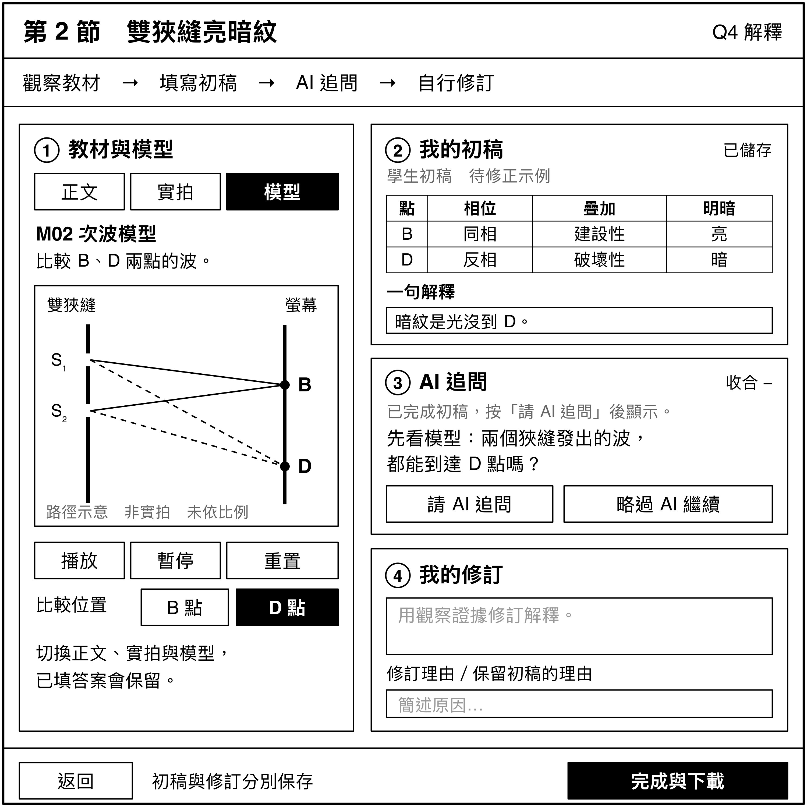
| 情境 | 預期結果 | 本書現況 |
|---|---|---|
| 正常操作 | 實拍可放大；模型可播放、暫停、重置及選 B／D；切換素材不清除作答 | 符合（實拍以新分頁開啟） |
| Q4 未填完整 | 追問按鈕停用並提示；原稿仍可編輯 | 符合 |
| 索取答案／提示後仍卡住 | 一次一個主問題且不代答；連續兩層仍卡住轉教師 | 提示階梯用完顯示轉教師 |
| 斷網／逾時 | 正文與模型仍可用；已填回答保留 | 模擬全部本機運算；作答暫存於瀏覽器 |
| 重新開啟／下載資料 | 重新整理保留作答；下載含初稿與修訂，欄位可依 ACT01 及 Q4 對回 | 符合：可續作；總學習單可下載 JSON 與 CSV |
| 項目 | 說明與處理 |
|---|---|
| 03 的節次 | 表頭寫第3節，02、08 與內文指第2節；採第2節。 |
| 缺文件09 | 02、08 引用 AI 蘇格拉底式回應規範，不在資料夾；只用 08 已摘錄的規則。 |
| 第1、3節學習單、前後測原卷 | 不在資料夾；依 02 題號重建作答，總評量依 06 自編。 |
| 隨堂細目表 | 06 只有第3節分表；第1、2節小測依 05 題卡自編。 |
| 圖片素材 | 07A 圖檔資料夾不在此；07A 列出的實拍照片已自 Wikimedia Commons 下載縮圖嵌入（望遠鏡繞射尖峰暫為外連），授權見封底；其餘圖與動畫由本書程式生成，或取自 07B、08 內嵌圖。 |
本教材整合「02_已填寫參考範例」10 份示範文件（01 核心教材文本、02 單元教案、03 學習單、04 延伸資源、05 核心題目、06 雙向細目表、07A 素材清單、07B 需求腳本、08 數位整合規劃、10 學習困難引導）。
| 照片 | 作者 | 授權 |
|---|---|---|
| 紅光雙狹縫干涉 | Bryan Tong Minh | Public Domain |
| 藍光單狹縫繞射 | Xyqorophibian | CC BY-SA 4.0 |
| 光凳器材組 | Waifer X／Cuesta College | CC BY 2.0 |
| 光凳實際架設 | Cantons-de-l'Est | CC BY-SA 4.0 |
| 可調式單狹縫器 | Jan Krieger | CC BY-SA 3.0 |
| 肥皂泡 | Pksois23 | CC BY-SA 4.0 |
| 肥皂膜 | Yaroslav Ulyushin | CC BY 4.0 |
| 油膜 | gambier20 | CC BY 2.0 |
| 光碟虹彩 | Hapecko | CC BY-SA 4.0 |
| 牛頓環 | Ulfbastel | Public Domain |
| 一般與抗反射鏡片 | Maximilian Schönherr | CC0 |
| 藍閃蝶 | Alias 0591（Rene Mensen） | CC BY 2.0 |
| 孔雀羽毛 | Bernard Spragg. NZ | CC0 |
| 望遠鏡繞射尖峰（外連） | ESA/Hubble & NASA | CC BY 4.0 |
標示「模型」的圖用來解釋，不是實驗證據。